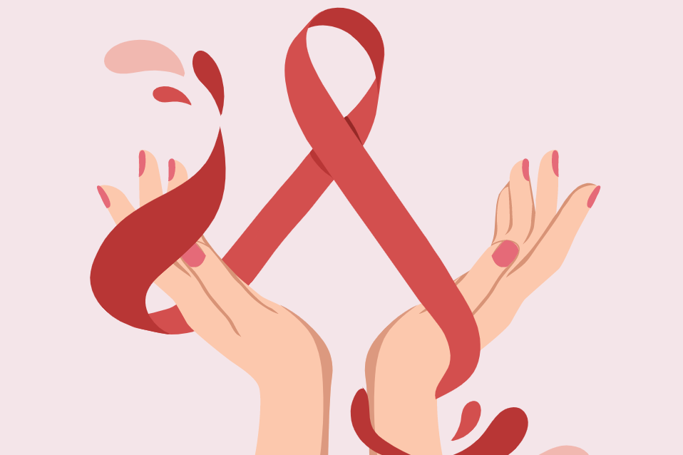
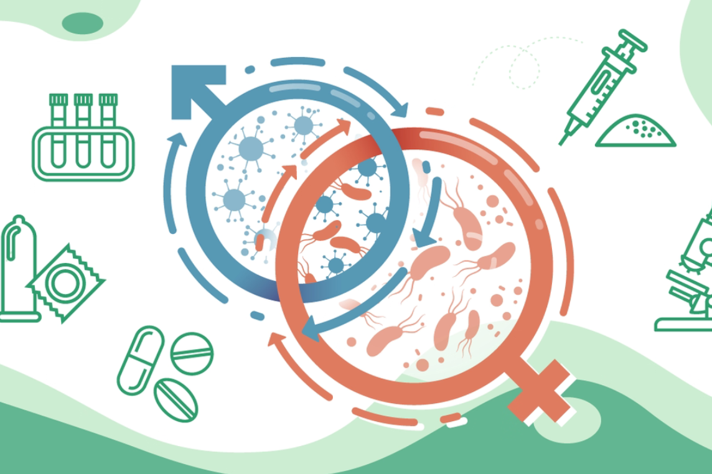

We are a global non profit for
Improving Public Health
The word health refers to a state of complete emotional and physical well-being. Healthcare exists to help people maintain this optimal state of health.Well organized preventive and curative health services, good social and economic backgrounds and a clean environment are essential for having a healthy society. while it is important that people should be free from disease and deformity their physical, mental and social well-being are equally important. In our previous lessons, we learnt how to improve and maintain our health. Now it is time for us to go further and study what is meant by 'total health' and the factors that influence it. We will also learn about identifying suitable life styles to maintain total health, challenges to currend health conditions and ways of overcoming them. This knowledge will help us build a healthy society.
The state of complete physical, mental and spiritual well-being is called health. Health consists of maintaining the body and taking preventive measures to reduce the possibility of developing various diseases. Health is the body’s natural functional and metabolic efficiency to adapt to physical and mental changes the body is exposed to. Having good health helps a person to perform their daily routine in a smooth manner. Physical health of a person means the body is not affected by any disease whereas mental or social health is characterized by the ability of a person to accomplish various social tasks given to him.
While some people now embrace a rainbow of possibilities between the familiar pink and blue, others hew even tighter to a biological fundamentalism. Those willing to recognize new forms of gender feel anxious about misgendering others, while those who claim superior access to the truth are prepared to impose that truth upon those who disagree. What’s right—even what’s real—in such circumstances is not always self-evident. Labeling others contrary to how they have labeled themselves is an ethically loaded act, but “woman” remains a useful shorthand for the entanglement of femininity and social status regardless of biology—not as an identity, but as the name for an imagined community that honors the female, enacts the feminine and exceeds the limitations of a sexist society.
Articles
Cancer
Hearing that you have cancer can be stressful and frightening. Knowing what to expect — from diagnosis to recovery — can empower you and help you take control of your health. This is a general overview of what cancer is, symptoms to watch for, how it's detected, treatments and post-treatment care.
HIV
Human immunodeficiency virus (HIV) is the virus, or germ, that causes acquired immune deficiency syndrome (AIDS). Certain behaviors make the risk of getting HIV higher. You can only know if you have the virus by taking an HIV test.
STDSexually transmitted diseases

.A number of sexually transmitted diseases (STDs), including HPV, can affect both your pregnancy and delivery.Sexually transmitted diseases, commonly called STDs, are infections that are spread by having sex with someone who has an STD. Sexually transmitted diseases are passed on from sexual activity that involves the mouth, anus, or vagina.
STDSexually transmitted diseases
.A number of sexually transmitted diseases (STDs), including HPV, can affect both your pregnancy and delivery.Sexually transmitted diseases, commonly called STDs, are infections that are spread by having sex with someone who has an STD. Sexually transmitted diseases are passed on from sexual activity that involves the mouth, anus, or vagina.
STDSexually transmitted diseases
.A number of sexually transmitted diseases (STDs), including HPV, can affect both your pregnancy and delivery.Sexually transmitted diseases, commonly called STDs, are infections that are spread by having sex with someone who has an STD. Sexually transmitted diseases are passed on from sexual activity that involves the mouth, anus, or vagina.